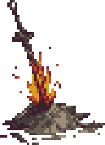

<div class="container my-5">
    <footer class="text-center text-white" style="">

        <div class="hoguera">
            <div [@popOverState]="stateName">
                
            </div>
            <button (click)="toggle()">Avivar la llama</button>
        </div>
        <div class="text-center p-3" style="background-color: rgba(0, 0, 0, 0.2)">
            <a class="navbar-brand" routerLink="/accesibilidad">Criterios de conformidad de WCAG 2.0</a> © 2023 Copyright:
            <a class="text-white" href="https://aaa-aikido.com/">Pagina Oficial de la AAI</a
          >
          <p>
            Web de gestión para cumplir las funciones de llevar un correcto funcionamineto de el número de Dojos,Alumnos y noticias entre los diferentes dojos de la AAI (Asociacion Internacional de Aikido) dando la opción de CRUD para los diferentes elementos que componen
            los dojos de la asociación.
        </p>
      </div>
    </footer>
  </div>